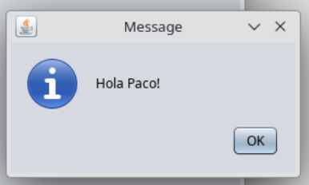
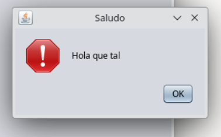
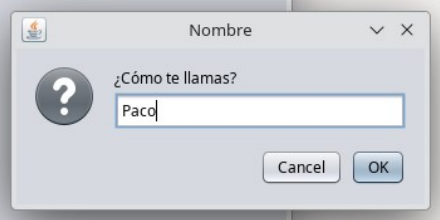
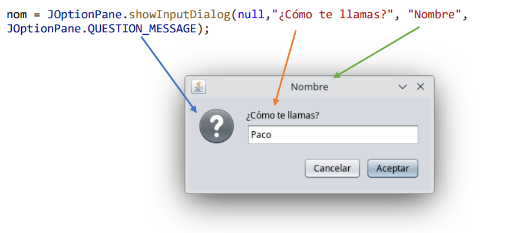
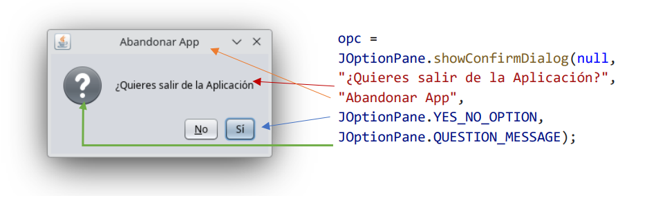
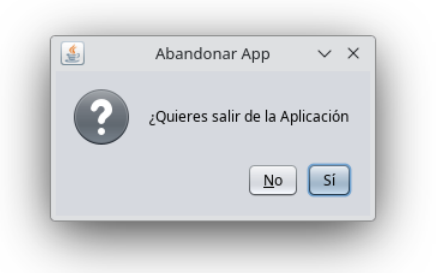

UD11 - Interfaces Gráficas con Swing
Creación de interfaces gráficas en Java usando NetBeans y la librería Swing.
11.1. Mensajes emergentes — JOptionPane
JOptionPane es un objeto Java que permite mostrar tres tipos de cuadros de diálogo de forma rápida, sin necesidad de diseñar una ventana manualmente.
import javax.swing.JOptionPane;
11.1.1 Cuadros de mensaje — showMessageDialog
Muestran un mensaje al usuario con un icono informativo.
// Sintaxis completa
JOptionPane.showMessageDialog(null, "Mensaje", "Título", JOptionPane.TIPO_ICONO);
// Sintaxis reducida (sin título ni icono)
JOptionPane.showMessageDialog(null, "Mensaje");

Parámetros:
| Parámetro | Descripción |
|---|---|
null |
Siempre null (ventana padre) |
"Mensaje" |
Texto que se mostrará |
"Título" |
Título de la ventana del diálogo |
| Tipo icono | Icono que aparece en el diálogo |
Tipos de icono disponibles:
| Constante | Icono |
|---|---|
JOptionPane.ERROR_MESSAGE |
❌ Error |
JOptionPane.INFORMATION_MESSAGE |
ℹ️ Información |
JOptionPane.QUESTION_MESSAGE |
❓ Pregunta |
JOptionPane.WARNING_MESSAGE |
⚠️ Advertencia |
JOptionPane.PLAIN_MESSAGE |
Sin icono |
// Ejemplo
JOptionPane.showMessageDialog(null, "Hola que tal", "Saludo", JOptionPane.WARNING_MESSAGE);

11.1.2 Cuadros de entrada — showInputDialog
Permiten al usuario escribir un dato. El valor introducido se devuelve como String.
String variable = JOptionPane.showInputDialog(null, "Petición", "Título", JOptionPane.TIPO_ICONO);

El resultado se almacena en una variable
A diferencia de showMessageDialog, aquí la instrucción se iguala a una variable String que recogerá el texto escrito por el usuario.
String nom = "";
nom = JOptionPane.showInputDialog(null, "¿Cómo te llamas?", "Nombre", JOptionPane.QUESTION_MESSAGE);
JOptionPane.showMessageDialog(null, "Hola " + nom + "!");

11.1.3 Cuadros de confirmación — showConfirmDialog
Muestran una pregunta con botones de respuesta. Devuelven un int con la opción elegida.
int opc = JOptionPane.showConfirmDialog(null, "Pregunta", "Título", TIPO_BOTONES, TIPO_ICONO);

Tipos de botones:
| Constante | Botones |
|---|---|
JOptionPane.YES_NO_OPTION |
Sí / No |
JOptionPane.OK_CANCEL_OPTION |
Aceptar / Cancelar |
JOptionPane.YES_NO_CANCEL_OPTION |
Sí / No / Cancelar |
Comprobar la respuesta:
| Constante | Botón pulsado |
|---|---|
JOptionPane.YES_OPTION |
Sí |
JOptionPane.NO_OPTION |
No |
JOptionPane.OK_OPTION |
Aceptar |
JOptionPane.CANCEL_OPTION |
Cancelar |
int opc;
opc = JOptionPane.showConfirmDialog(
null,
"¿Quieres salir de la aplicación?",
"Abandonar App",
JOptionPane.YES_NO_OPTION,
JOptionPane.QUESTION_MESSAGE
);
if (opc == JOptionPane.YES_OPTION)
JOptionPane.showMessageDialog(null, "¡Has pulsado Sí!");
else
JOptionPane.showMessageDialog(null, "¡Has pulsado No!");

Resumen de JOptionPane
| Método | Uso | Devuelve |
|---|---|---|
showMessageDialog |
Mostrar un mensaje | void |
showInputDialog |
Pedir un dato al usuario | String |
showConfirmDialog |
Preguntar Sí/No/Aceptar | int |